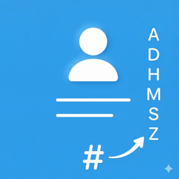

Fix Chinese contact sorting
让中文联系人按拼音正确排序
When your device language isn't Chinese, Chinese contacts lose their A–Z order and all end up under "#". PhonetiKit adds Mandarin pinyin to their phonetic name fields, so they sort correctly in Contacts, Phone and Messages across your Apple devices.
Available for iPhone, iPad and Mac. Optimized for iPhone Duo.
Everything happens on your device. No data is collected, uploaded or shared.
Read the full Privacy Policy.
Questions or feedback? Email zongzheng_app@icloud.com.
当设备语言不是中文时，中文联系人会失去 A–Z 排序，全部挤到「#」下面。正音为这些联系人的注音字段添加普通话拼音，让它们在你所有 Apple 设备的通讯录、电话和信息里都能正确排序。
支持 iPhone、iPad 和 Mac，已适配 iPhone Duo。
所有处理都在你的设备上完成，不收集、不上传、不分享任何数据。
查看完整的隐私政策。
有问题或建议？请发邮件至 zongzheng_app@icloud.com。